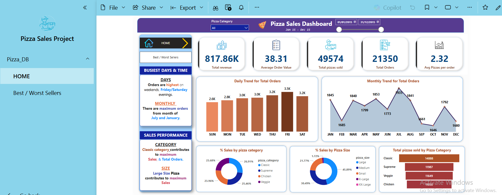
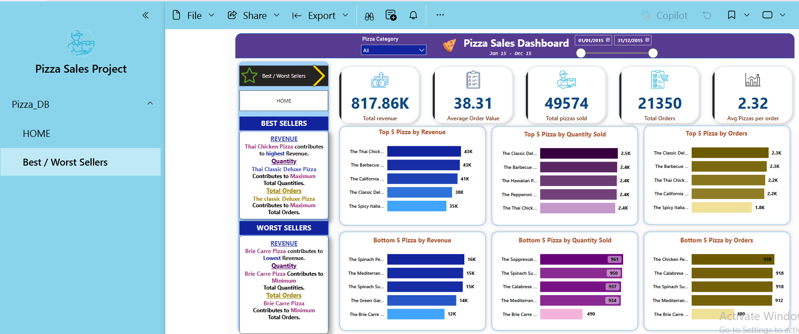
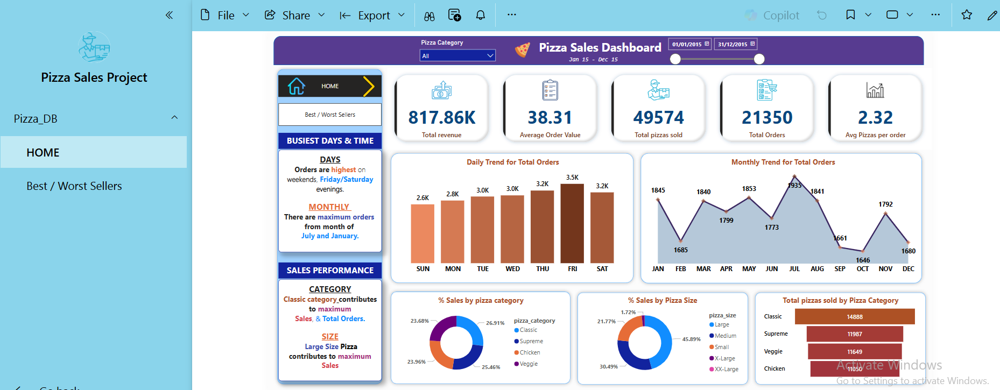
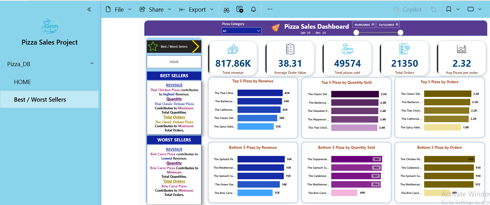

🍕 Pizza Sales Analysis – SQL + Power BI
This project presents a detailed sales analysis of a fictional pizza shop using SQL and Power BI. It focuses on uncovering revenue trends, top-selling products, customer ordering behavior, and product category performance.
📌 Project Objective
- Understand revenue trends and sales growth
- Identify top/bottom performing pizzas
- Analyze sales by size and category
- Track order trends by day and month
🔧 Tools & Technologies Used
- SQL Server / MySQL
- Power BI
- Excel
📊 Dashboard Preview
 

🔗 View Dashboard (Power BI Access Required)


🔗 View Dashboard (Power BI Access Required)
📈 KPIs
- Total Revenue – SUM of all order prices
- Average Order Value – Total Revenue / Total Orders
- Total Pizzas Sold
- Total Orders
- Avg. Pizzas per Order
-- Total Revenue
SELECT SUM(total_price) AS Total_Revenue FROM pizza_sales;
-- Average Order Value
SELECT (SUM(total_price) / COUNT(DISTINCT(order_id))) AS Average_order_value FROM pizza_sales;
-- Average Pizzas per Order
SELECT
(CAST(SUM(quantity) AS DECIMAL(10,2)) / CAST(COUNT(DISTINCT(order_id)) AS DECIMAL(10,2)))
AS avg_pizzas_per_order
FROM pizza_sales;
📊 Visuals & Insights
- Daily Orders by Weekday
- Monthly Order Volume
- Sales % by Pizza Size and Category
- Top & Bottom 5 Pizzas by Revenue, Orders, Quantity
-- Top 5 Best Sellers by Revenue
SELECT TOP 5 pizza_name, SUM(total_price) AS Total_sales
FROM pizza_sales
GROUP BY pizza_name
ORDER BY Total_sales DESC;
💡 Business Insights
- Regular-sized pizzas are the most popular
- Classic and Supreme categories lead revenue
- Weekends show peak order activity
- A few pizzas contribute to the majority of sales
📬 Contact
- Name: Nikhil Chavan
- Email: nikhilcaptain4@gmail.com
- LinkedIn: linkedin.com/in/nikhil-c